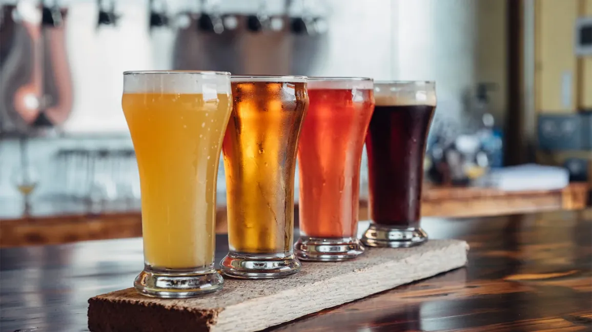

What is Beer?
Beer is the oldest and most widely consumed type of alcoholic drink in the world, and the third most popular drink overall
after potable water and tea.
It is produced by the brewing and fermentation of starches, mainly derived from cereal grains—most commonly from malted barley,
though wheat, maize (corn), rice, and oats are also used. During the brewing process, fermentation of the starch sugars in the wort produces
ethanol and carbonation in the resulting beer. Most modern beer is brewed with hops, which add bitterness and other flavours and act as
a natural preservative and stabilizing agent. Other flavouring agents such as gruit, herbs, or fruits may be included or used instead of hops.
In commercial brewing, the natural carbonation effect is often removed during processing and replaced with forced carbonation.

How is alcohol in beer measured?
The strength of beer may be measured by the percentage by volume of ethyl alcohol.
Strong beers are above 4 percent, the so-called barley wines 8 to 10 percent.
Brewing
The process of making beer is known as brewing. A dedicated building for the making of beer is called a brewery, though beer can be made
in the home and has been for much of its history, in which case the brewing location is often called a brewhouse. A company that makes beer
is called either a brewery or a brewing company. Beer made on a domestic scale for non-commercial reasons is today usually classified as
homebrewing regardless of where it is made, though most homebrewed beer is made in the home. Historically, domestic beer was what's called
farmhouse ale.
Brewing beer has been subject to legislation and taxation for millennia, and from the late 19th century taxation largely restricted brewing
to commercial operations only in the UK. However, the UK government relaxed legislation in 1963, followed by Australia in 1972 and the US in 1978,
though individual states were allowed to pass their own laws limiting production,[50] allowing homebrewing to become a popular hobby.
The purpose of brewing is to convert the starch source into a sugary liquid called wort and to convert the wort into the alcoholic drink
known as beer in a fermentation process effected by yeast.